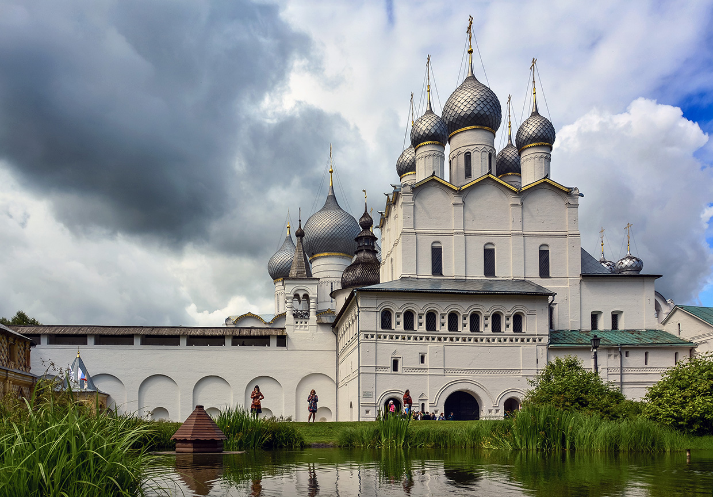
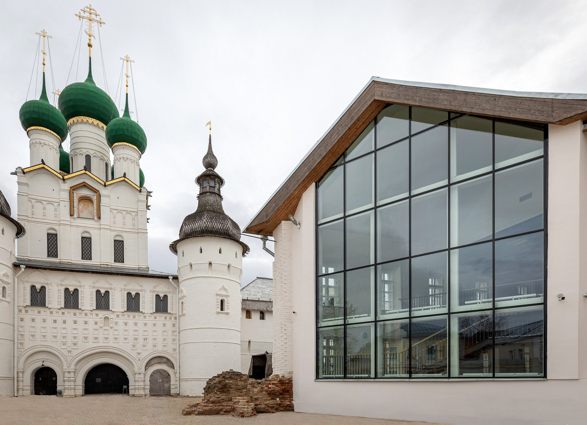
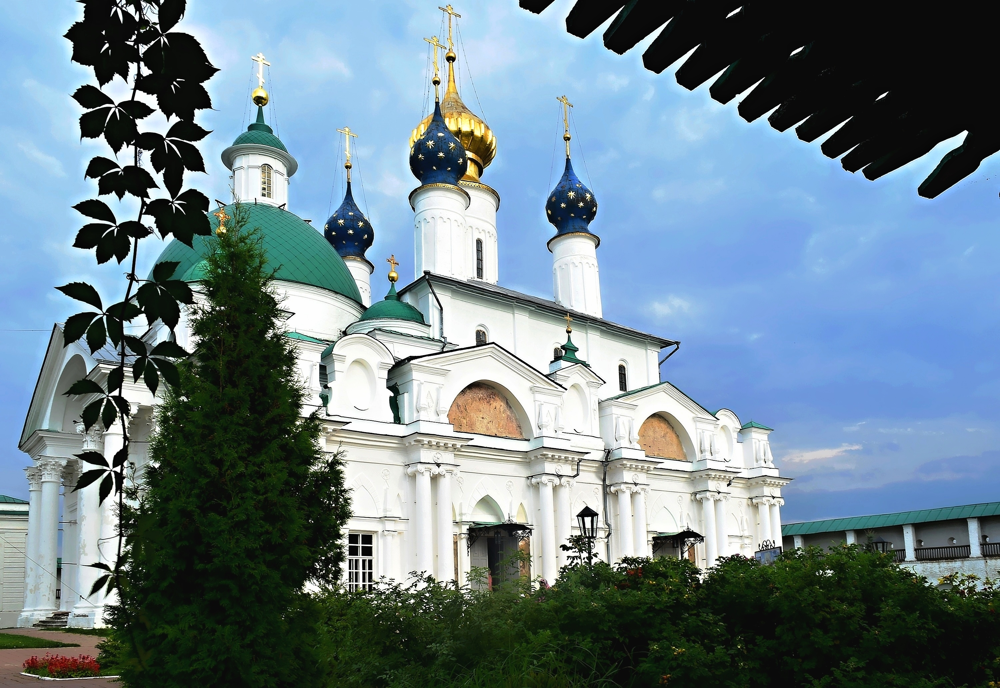

Ростов Великий
Ростов Великий – город, летопись которого насчитывает более тысячи лет, настоящая жемчужина исторической России. Расположенный в центральной части нашей страны, в Ярославской области, всего в 53 км юго-западнее Ярославля, Ростов является административным центром одноименного района с населением около 30 тысяч человек. Ростов Великий сквозь века пронес свою красоту и величие, сохранив ее в сотнях уникальных архитектурных памятников. На Ростовской земле сохранились тысячелетние полноводные озера, березовые рощи и ценнейшие памятники истории и культуры.

Ростовский кремль — бывшая резиденция митрополита Ростовской епархии Ионы Сысоевича. Кремль построили в 70–80-х годах XVII века на берегу озера Неро. На территории резиденции располагается множество церковных, административных и хозяйственных построек, соединенных арочными переходами. Ансамбль Ростовского кремля включает Соборную площадь, Архиерейский двор и Митрополичий сад. На Соборной площади располагается Успенский собор — старейшее здание Ростова, построенное задолго до самого кремля.

В 1883 году в Белой палате Ростовского кремля открылся Музей церковных древностей, позже он получил статус общероссийского музея. Кремль окончательно утратил свою религиозную функцию, однако нахождение в его помещениях музея позволило сохранить архитектурный ансамбль бывшей резиденции. Сегодня в музее-заповеднике «Ростовский кремль» представлено более 180 тысяч ценных экспонатов, среди них — древнерусские иконы, ямские бубенцы, запрестольный крест XVI века.

Панорама Спасо-Яковлевского монастыря — один из самых живописных видов Ростова Великого. Здесь сочетаются различные по стилю архитектурные формы — классические и барочные завершения церквей, псевдоготические башни. Монастырь еще в XIV веке основал ростовский епископ Иаков — он срубил небольшой деревянный храм к югу от города. Позже вокруг церкви сформировалась целая обитель. В настоящее время на территории монастыря находятся три храма — Яковлевская церковь, Зачатьевский и Дмитриевский соборы.
